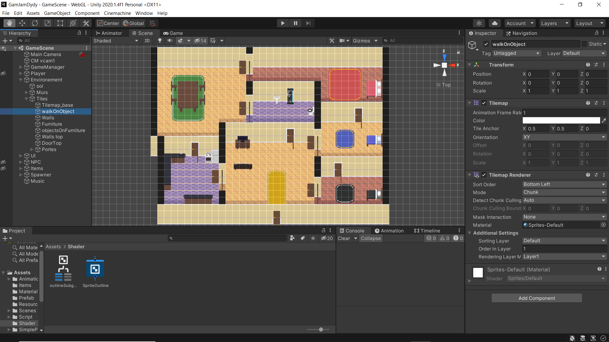
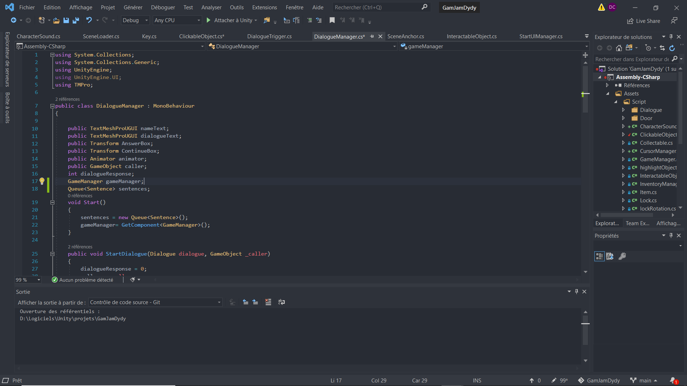
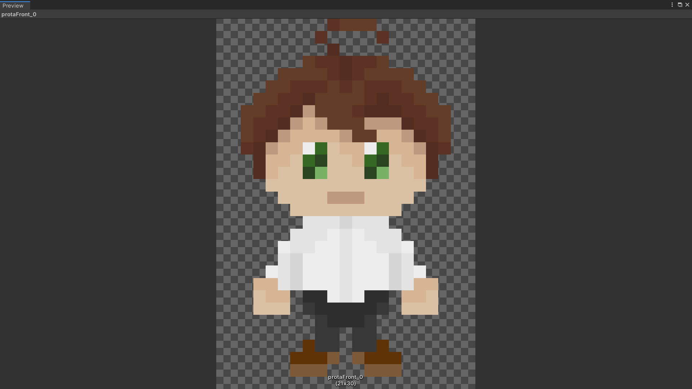
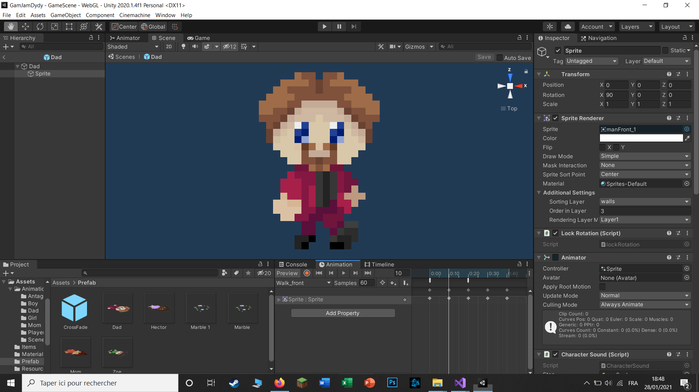
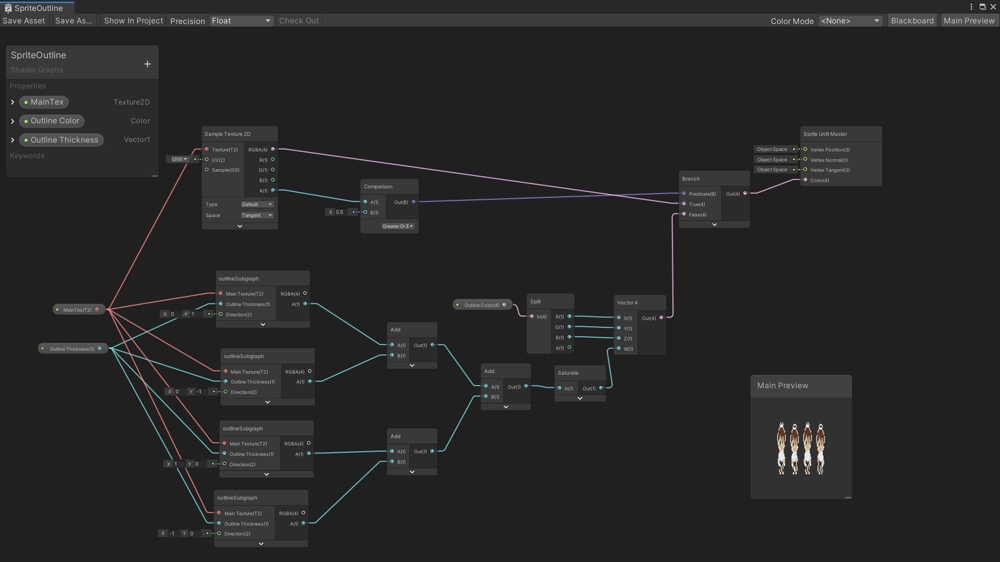

Don't Tell My Secret

Agencement des tuiles
Pour creer l'environnement 2D du jeu

Exemple de script
Script c# pour la gestion des dialogues

Creation d'un sprite
(image 2D pouvant bouger dans la scène)

Animation d'un sprite
pour la marche

Creation d'un shader
pour l'effet de surbrillance réalisé avec ShaderGraph
Previous
Next
Le mini jeu présenté ici a été entièrement réalisé en deux jours grâce à l'aide d'un ami (à l'exception de la musique).
Nous avons participé à un GameJam (un chalenge de création de jeux vidéo) au cours duquel nous avions comme objectif
de créer un jeu sur le thème du secret en seulement deux jours ! Nous avons donc choisi de faire un jeu en vue du dessus avec un style rétro.
Le but : empêcher votre peste de soeur de révéler à toute la famille votre plus grand secret. Étant donné le temps de conception très court,
le jeu présente encore quelques bugs, mais les fonctionnalités principales sont présentes. Contrairement à son nom,
le jeu présente quelques idées originales que je t'invite à essayer en suivant ce lien: